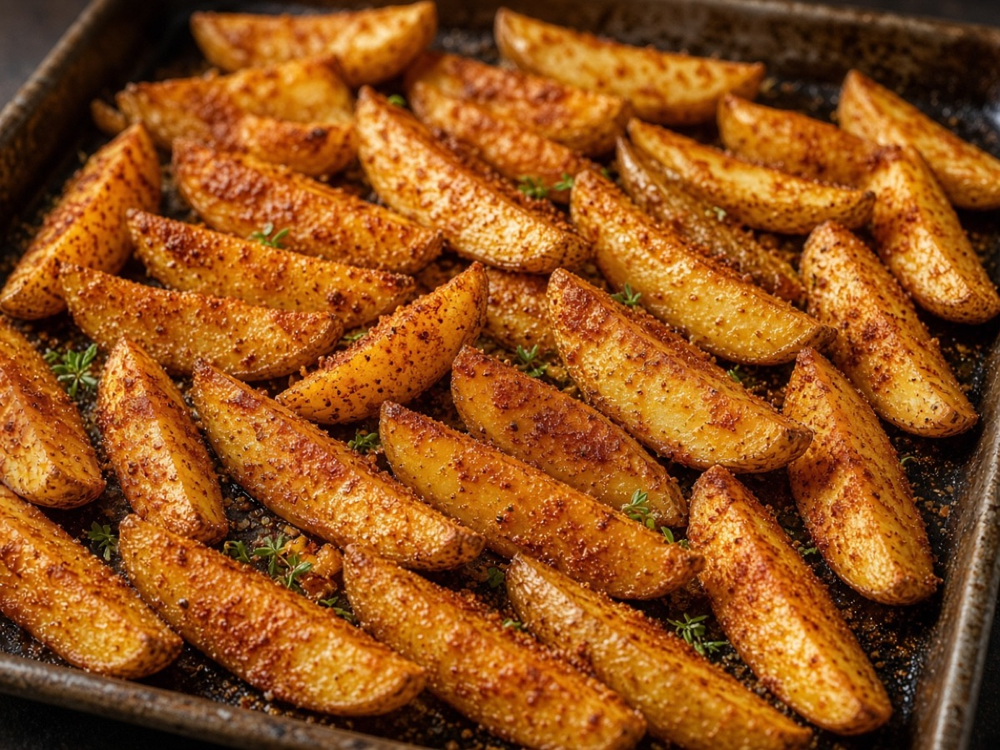
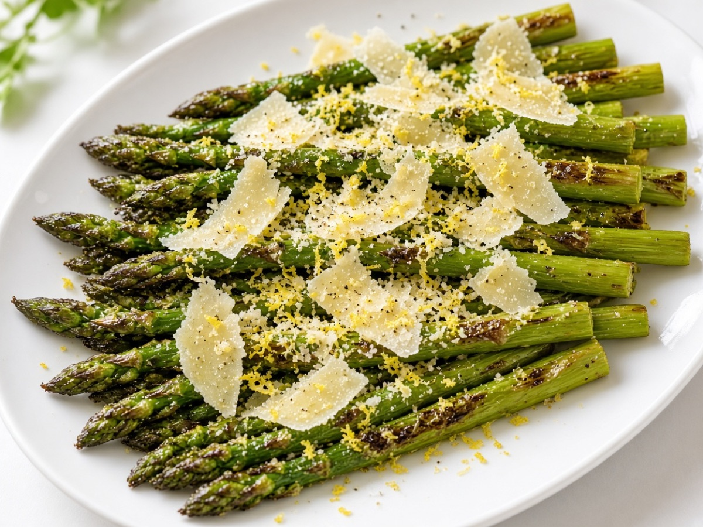
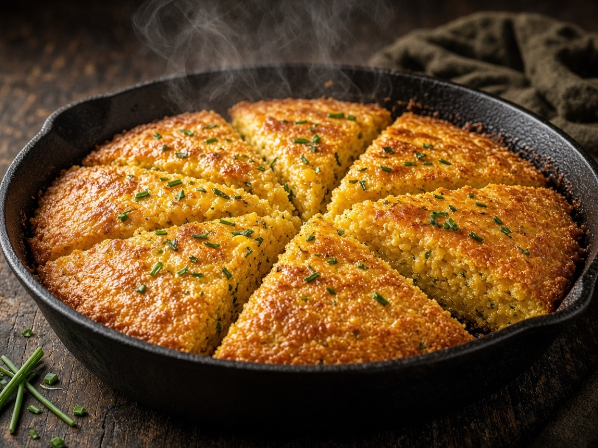
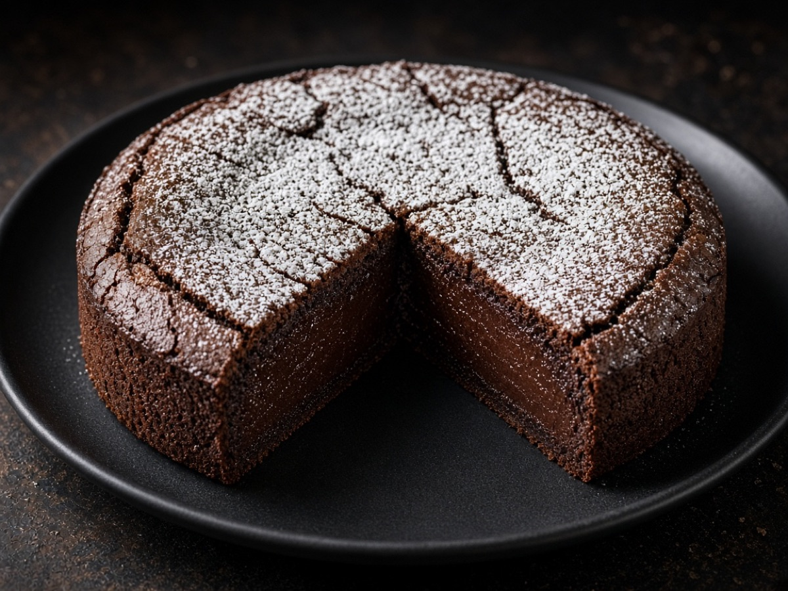
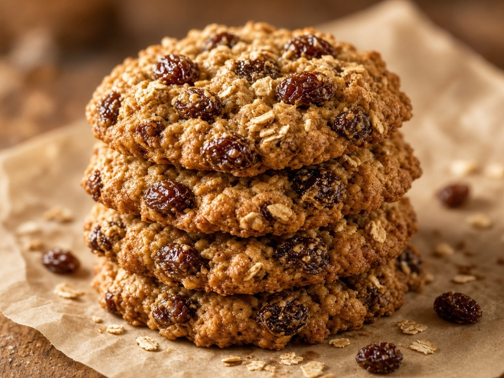

BreakfastFree
BreakfastFree
Brown Butter Steel-Cut Oats
Creamy steel-cut oats finished with nutty brown butter, maple, and toasted pecans.
Free recipeRead free recipe
The shop
23 recipes. 10 are free to cook right now; premium recipe cards start at $2.99.
BreakfastFree
Creamy steel-cut oats finished with nutty brown butter, maple, and toasted pecans.
 Breakfast$3.99
Breakfast$3.99
Tender sour-cream coffee cake with a thick cinnamon-sugar ribbon and buttery streusel.
 BreakfastFree
BreakfastFree
Oven-finished eggs with sautéed mushrooms, wilted spinach, and melted Gruyère.
 Breakfast$2.99
Breakfast$2.99
Flaky buttermilk biscuits loaded with sharp cheddar and fresh chives.
 Breakfast$4.99
Breakfast$4.99
Overnight baked French toast with cinnamon custard, toasted pecans, and maple glaze.
 Mains$4.99
Mains$4.99
Thin-sliced seasoned beef piled on a roll, dipped in jus, and topped with hot giardiniera.
 Mains$5.99
Mains$5.99
Buttery cornmeal crust pressed into a deep pan, layered with mozzarella, sausage, and chunky tomato sauce.
 Mains$3.99
Mains$3.99
Juicy chicken thighs with Chicago hot giardiniera, peppers, and a garlicky pan sauce.
 MainsFree
MainsFree
Silky roasted tomato soup finished with cream and plenty of fresh basil.
 Mains$3.99
Mains$3.99
Thin smash burgers with crispy edges, American cheese, pickles, and a soft potato bun.
 MainsFree
MainsFree
Crispy-skinned chicken thighs roasted over soft garlic cloves and lemon.
 Mains$4.99
Mains$4.99
Chicago’s Puerto Rican classic — smashed fried plantains as the “bread,” filled with garlicky steak, mayo, and cheese.
 Seafood$3.99
Seafood$3.99
Flaky smoked whitefish folded into a lemony cream cheese spread for crackers and rye.
 SeafoodFree
SeafoodFree
Crisp-skinned trout fillets seared in butter and finished with lemon and parsley.
 Seafood$5.99
Seafood$5.99
Buttery garlicky shrimp baked under a sherry-breadcrumb topping — a century-old Chicago restaurant classic.
 SidesFree
SidesFree
Crunchy pickled vegetables in a spicy oil-vinegar brine — the condiment Chicago runs on.

SidesFreeThick-cut russet wedges roasted until shatter-crisp with paprika and garlic.

SidesFreeSpring asparagus roasted hot and finished with lemon and shaved Parmesan.

Sides$2.99Cast-iron cornbread studded with sharp cheddar and chives, crisp at the edges.
 Desserts$4.99
Desserts$4.99
Tall, dense, and creamy baked cheesecake with a sour cream finish — the Chicago bakery classic.

DessertsFreeRich, fudgy chocolate cake with a crackly top — naturally gluten-free and deeply chocolatey.
 Desserts$3.99
Desserts$3.99
Flaky handheld pies filled with cinnamon apples and a ribbon of caramel.

DessertsFreeSoft, chewy oatmeal cookies packed with plump raisins and a hint of cinnamon.
No recipes match. Try another word or clear the filters.
10% offWelcome offer
Join 12,000+ home cooks. Get the code WELCOME10, a free recipe every Sunday, and first access to new recipe cards. No spam, unsubscribe any time.